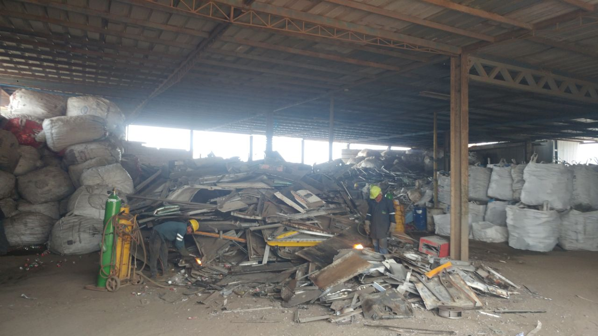

Desalojo de materiales
Nos encargamos de remover su maquinaria dañada, equipo pesado inservible, residuos de procesos industriales, materia prima obsoleta o cualquier tipo de desperdicios metálicos que tenga. Contamos con todo lo necesario: personal, equipo de corte, camiones para traslado. Pago inmediato del material retirado. Confidencialidad total — el material se desmantela y destruye completamente, sin revelar información a terceros.
- ✓ Personal especializado
- ✓ Equipo de corte y camiones propios
- ✓ Pago inmediato
- ✓ Confidencialidad garantizada